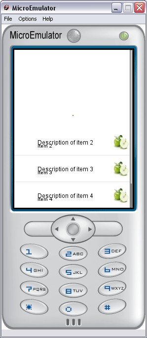

ScrollableList prototype

Scrollable list with an image and a text per item.
Data fields
- MFString elementsTitles - Elements titles
- MFString elementsLabels - Elements labels
- MFString elementsIcons - Elements icons
- MFInt32 elementsStates - Elements states to enable one state per item of the list (for example multi-selection : 'checked', 'not checked')
- MFString stateIcons - Icons state to enable one state per item of the list (for example multi-selection : 'checked', 'not checked')
- SFInt32 nbElements - Total number of element in the list (different of list.nbItems : number of elements shown with the current screenSize)
Style fields
- MFString style - Style for this prototype
- MFString titleStyle - Style for the title of the item
- MFString scrollbarStyle - Style for the ScrollBar
- MFString focusbarStyle - Style for the FocusBar
- MFString focusbarImages - Images for the FocusBar
- SFVec2f size - Size of the prototype
- SFVec2f textScale - Use for scaling text if necessary (phone with small fonts)
- SFVec2f titlePos - Title position
- SFVec2f labelPos - Label position
- SFInt32 itemHeight - Item height
- MFString images - Images of the focusbar (background and reflect)
Warning:
Define style is required (we can use the default style - see
Style node).
Exposed Fields
- SFInt32 update - Update list. Call update is needed if Styles fields are modified
- SFInt32 updateElement - Update an element in particular
- SFInt32 currentElement - Current element
- SFBool enable - Enable / disable
- SFBool enableCycle - Allows focus bar to jump from first to last position when using the keyboard
Event Out
- SFTime selection - The time when an item is selected in the list
Event In
- SFInt32 goToElement - Force list to focus a given element
List